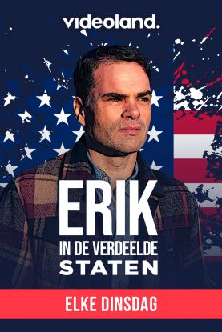
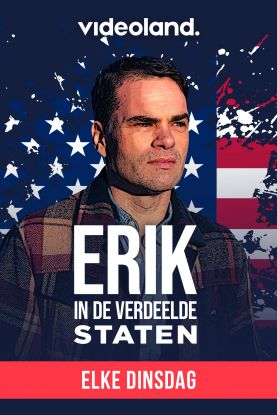

Erik in de verdeelde staten
In een heel persoonlijke documentaireserie gaat Erik Mouthaan op zoek naar de diepe verdeeldheid van de Amerikanen. Hij maakt zich zorgen over het land waar hij woont en van houdt.
In een heel persoonlijke documentaireserie gaat Erik Mouthaan op zoek naar de diepe verdeeldheid van de Amerikanen. Hij maakt zich zorgen over het land waar hij woont en van houdt.
